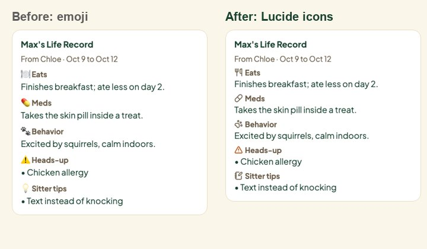
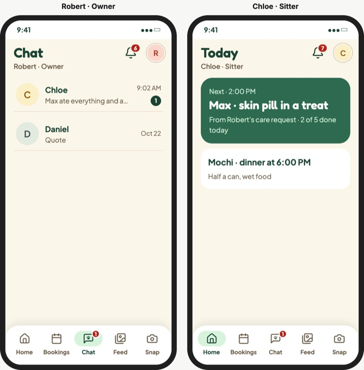
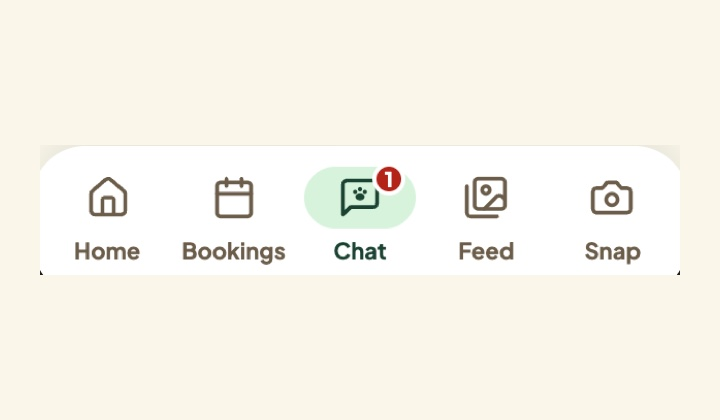

Worked on, what's left작업한 일, 남은 일
Covers late Oct 23 and Oct 24. Four days to the Oct 28 freeze10/23 늦게부터 10/24까지. 10/28 동결까지 나흘
Worked on작업한 것




Design tickets in today's slot오늘 슬롯의 디자인 티켓
All open track:design tickets, checked against GitHub and the code on main today. Same list on the Project page and in Figma (Tickets page).열린 track:design 티켓 전부, 오늘 GitHub와 main 코드로 확인. 프로젝트 페이지와 피그마 (Tickets 페이지)에 같은 목록.
Done today오늘 완료

In the slot today오늘 할 일

Ready to close (done)닫을 준비 (완료)
- #112 · Scenario screens in FigmaFigma의 시나리오 화면: The plugin builds every Expressive screen of the stay, stages 1 to 5, from the Expressive components, and flags what changed on each run.플러그인이 스테이 1~5단계의 Expressive 화면을 모두 컴포넌트로 만들고 실행마다 바뀐 것을 표시. Close with a link to the Screens page.Screens 페이지 링크와 함께 닫기. #112
- #113 · Sample photo set샘플 사진 세트: Meals, walks, naps, handoff shots, fictional treat labels and mood photos are on main; #333 added cats and put every sample in every picker.식사, 산책, 낮잠, 인계 사진, 가상 간식 라벨, 기분 사진이 main에; #333이 고양이를 더하고 모든 선택기에 넣음. Close. The breed photos for pet chips are new scope, a small issue of their own.닫기. 펫 칩용 품종 사진은 새 범위로 따로 작은 이슈. #113 #333
- #115 · Large-text onboarding and the at-a-glance card큰 글씨 온보딩과 한눈에 보기 카드: The design shipped: one question per screen, 64 px options, the five-axis at-a-glance card, warnings first for the sitter (#255 and follow-ups).디자인이 반영됨: 화면당 질문 하나, 64px 선택지, 다섯 축 카드, 시터에게 주의사항 먼저 (#255와 후속). Close. #332 and #334 are build polish under their own owners.닫기. #332, #334는 각자 담당의 마무리 작업. #115 #255
- #119 · Coat-colour skins and pixel pets털 색 스킨과 픽셀 펫: #261 and #275: pixel pet rooms on both Homes, 8 coat palettes, breed heads, colours from the pet's photo, moods and poses.#261, #275: 양쪽 홈에 픽셀 펫 방, 털 팔레트 8개, 품종 머리, 사진에서 뽑은 색, 기분과 자세. Close. A visual rework stays on hold until after the submission.닫기. 그림 손질은 제출 후까지 보류. #119 #261
- #179 · One calendar in sitter search시터 검색의 캘린더 하나: #200 and #279: a one-line search bar with one range calendar and quick picks, results right under it. Exact times stay, to match the sitter's slots.#200, #279: 한 줄 검색 바, 범위 캘린더 하나와 빠른 선택, 결과가 바로 아래. 시터 시간대와 맞추려고 정확한 시간은 유지. Close with a note: the bar replaces the form, so there is nothing left to fold.메모와 함께 닫기: 바가 폼을 대신해 접을 것이 없음. #179 #200
After the submission제출 후
Needs the team팀이 해 줄 것
Minsik: review two PRs민식님: PR 두 개 리뷰Status icons (#293) and past booking cards (#181). Both pass the full test suite.상태 아이콘 (#293)과 지난 예약 카드 (#181). 둘 다 전체 테스트 통과.#352 #353
#116 · Demo video데모 영상Lock today who records and when (Oct 26 or 27). Mook edits Oct 27 to 28 and leaves Oct 29.오늘 누가 언제 녹화할지 정하기 (10/26 또는 10/27). 무크는 10/27~28 편집, 10/29 떠남.Minsik records, Mook edits민식님 녹화, 무크 편집#116 Shot list
#330 · Booking: one question per screen예약: 화면당 질문 하나Yes: a helper builds it Oct 25 to 26. No: after the submission.예: 도우미가 10/25~26에 만듦. 아니오: 제출 후.Minsik and Seulgi, by Oct 24민식님, 슬기님, 10/24까지#330 Booking flow
#111 · Judge side panel beside the phone폰 옆 심사위원 패널Minsik: does the panel ship next to split view? Yes: half a day for a helper. No: close #111.민식님: 분할 화면 옆에 패널을 넣을까요? 예: 도우미 반나절. 아니오: #111 닫기.Minsik decides민식님 결정#111 Judge panel
Minsik: close five done tickets민식님: 끝난 티켓 다섯 닫기#112, #113, #115, #119, #179 are done (checked against main). Notification titles with emoji come from the database.#112, #113, #115, #119, #179 완료 (main으로 확인). 이모지가 든 알림 제목은 데이터베이스에서.Tickets
Mook: re-run the plugin, push the tickets무크: 플러그인 재실행, 티켓 푸시Components and Screens (the icon set grows to 58), then Tickets: Design kit, Nav, Booking flow, #120, one at a time.컴포넌트와 화면 (아이콘 58개로), 그다음 티켓: 디자인 키트, 내비게이션, 예약 흐름, #120 하나씩.Tickets page
Left before the Oct 28 freeze10/28 동결 전 남은 일
- Step-by-step booking in the app, if #330 says yes (about a day)단계별 예약 앱에 적용, #330이 좋다면 (약 하루)
- Demo video: record by Oct 27, edit Oct 27 to 28데모 영상: 10/27까지 녹화, 10/27~28 편집 #116
- Figma-linked handoff so Minsik can approve UI after Oct 29피그마 링크 인수인계, 10/29 이후 민식님이 UI 승인할 수 있게
- About 20 breed photos for pet chips품종 사진 약 20장 (펫 칩) #113
- On hold: pixel pets, illustrations, report card themes (#118)보류: 픽셀 펫, 일러스트, 리포트 카드 테마 (#118)